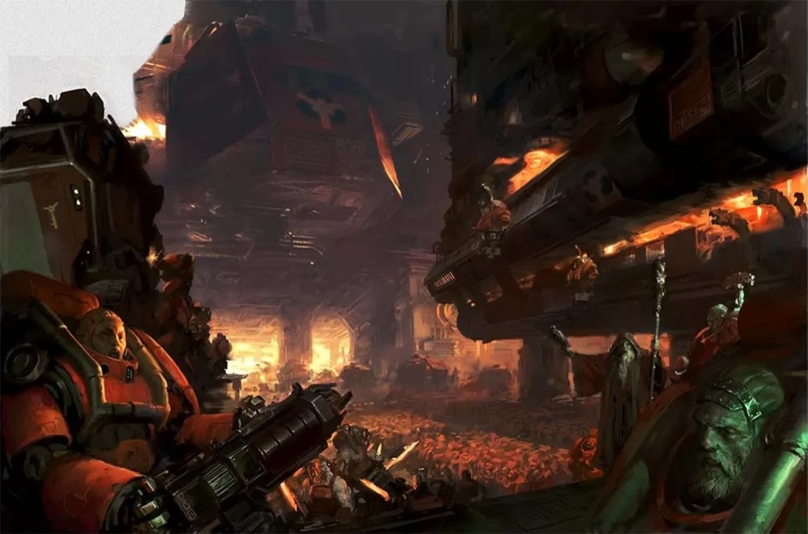

Leagues of Votann
| Leagues of Votann The Kin | |
|---|---|
Sigil of the Kin, recovered by the Ordo Xenos Artwork © Games Workshop | |
| Classification | Disputed: Abhuman (sanctioned, now lapsed) or xenos, depending on the Imperial authority |
| Origin | Descendants of the Long March mining fleets sent out from pre-Imperial Terra, now settled in the galactic core |
| Homeland | The galactic core; Hold Worlds, mining worlds and void stations |
| Government | Leagues of Kindreds, each guided by a Votann (Ancestor Core) |
| Population | Unknown; grown in crucibles from cloneskeins |
| Companions | The Ironkin, self-aware machines treated as equals |
| Imperial names | Squats; Abhumans of the Homeworld Hearths; also Demiurg, Gnostari, Grome, Kreg (misidentifications by others) |
| Major Leagues | |
| Greater Thurian League, Kronus Hegemony, Trans-Hyperian Alliance, Urani-Surtr Regulates, Ymyr Conglomerate | |
| Principal conflicts | |
| Wars against the Orks; the Necron awakenings; the "Bane" (Tyranids); the Battle of Örgvayr; the first collisions with Imperial forces in the Era Indomitus | |
The Leagues of Votann are the confederations of a clone-born people who call themselves the Kin, and whom the Imperium has long known by the dismissive name Squats. They are short, enormously strong and stubborn, and live in the dangerous and resource-rich regions of the galactic core, far beyond the Imperium's detailed maps. The Kin are a starfaring civilisation with a technology the Mechanicus covets, and they share their cities, mines and fleets with the Ironkin, self-aware machines that are accepted as full members of their society. Each of their Leagues is a loose alliance of Kindreds united by the worship of an Ancestor Core, a machine intelligence known as a Votann, which preserves the memories of the dead.[1][2]
For most of the Imperium's history, the Kin's existence was disputed. The Imperial records of the 38th and later millennia describe the Squats as an Abhuman strain whose home worlds in the core had been devoured by the Tyranids, so that the race was extinct or nearly so. The Ordo Xenos now holds this account to be largely wrong. The Kin were never destroyed. They kept to the core, exploited its wealth and had little to do with the Imperium, to the point that the Imperium's few records of them were of isolated Kindreds, trade fleets and mercenary bands whose true nature was never recognised.[1][3]
The opening of the Great Rift in the Era Indomitus has changed this. The warp storms that have swept the galactic core have driven the Kin from their ancient holdings, and the Imperium's own forces, thrown across space by the storms, have appeared in the Kin's territory. The Leagues have therefore met the Imperium for the first time as a major power in their own right, and the encounter has been violent.[4]
Origins
[edit]The Long March
[edit]The Kin's own account, which is the only one available and cannot be checked, begins on pre-Imperial Terra during the Age of Technology. The earliest Kin were miners, prospectors and void-dredgers, sent out aboard sublight generation ships, the Long March fleets, to exploit the resources of the stars. Their descendants came to the galactic core in a small number of centuries and, for reasons the Kin no longer remember, did not return. The Kin state as a first truth, a fact beyond dispute, that they have been clones from the beginning and that the robotic Ironkin were with them from the first. Their ancient records establish a link to Terra and for this reason the correct Imperial classification is Abhuman, although the Kin themselves have no interest in the matter.[1]
Ancestor Cores and the Leagues
[edit]Over the millennia the Kin's cultures were formed by the extremes of the core. Their history blurs into myth. Votann, the Primal Ancestor or the Gilded One, is variously said to have built the first crucibles and to have sent the Kin into the void. In time the memories of the Kin's dead were stored in machine intelligences, the Ancestor Cores, and the Kindreds that owned them formed alliances for their defence. These were the first Leagues. Each League holds the heraldry of one of the original Long March fleets, and each Kindred of a League has the right to display it. The Kin have no central authority, and nobody, including the Kin themselves, can say how many Leagues there are.[1]
Imperial records of the Squats
[edit]The Imperium recorded the Squats early, but poorly. The abhuman Homeworld Hearths were listed in the Administratum's registers as sanctioned abhuman strains, in the same class as Ogryns and Ratlings, and Squat companies served the Imperium as auxiliaries. The records say that the Hearths were located in the galactic core and that the Imperium's contact with them was thin and conducted through trade. An earlier record, preserved in the Codex Imperialis, held that the Homeworld Hearths were devoured one after another by the Tyranids, and that the survivors were absorbed by the Imperium over a long period. The scribes concluded that the Squats were extinct as a people.[2][1]
This conclusion was premature. The Kin of the core did not respond to the Tyranids as the records say. They know the Tyranids as the Bane and treat them with respect as a clever predator. Some Kindreds have hunted lone Tyranid splinter fleets, striking isolated hive ships to harvest their biomatter. Others have fallen to it: the Emberg-Aegnir Bloc, a small group of Kindreds, was destroyed when a tendril of Hive Fleet Leviathan found its hold world and the Kin stood their ground. These events are the likely origin of the Imperium's belief that the Squats had perished.[1][5]
Nor were the Kin passive in the wider galaxy. Their Prospects, exploratory and mining fleets, travelled beyond the core, and individual Kin left their people to serve as mercenaries in the wars of other species. They have met every great power at one time or another. As the Kin do not announce the existence of the Votann, nearly all of these meetings were taken by the other side to concern a minor species of their own. The Imperium has probably met the Kin as nomads, as unclassified xenos trade fleets and as Abhuman enclaves, and the T'au named them the Demiurg. The Aeldari know them as the Heliosi Ancients.[1][3]
Wars of the Kin
[edit]Enemies of the core
[edit]The Leagues have fought many wars, and a disproportionate number against the Orks, who thrive in the core as well as anywhere else, and whose anarchic nature offends everything the Kin value. The Necrons are also long-standing enemies. They are disturbed by Kin excavations and rise from the Great Sleep to reclaim worlds that the Kin have settled. The Kin have little time for the mortal followers of the Dark Gods, whom they regard as foolish. They have a custom of keeping a record of wrongs, the Grudges, in which they inscribe the names of enemies of their Kindred. The Kin are among the few peoples who regard a war as an account to be settled.[1]

The Great Rift in the core
[edit]The greatest upheaval in the Kin's recorded history was the opening of the Great Rift at the start of the Era Indomitus. Warp storms erupted across the galactic core, and the Kin, who do not call the Rift by one name for fear of giving it a superstitious menace, named the greatest of the individual storms, such as Örgvayr, Töroll, Öggh and Cyklöp. The storms swallowed star systems, consumed Kindreds and shattered ancient trade routes. Pulsars and black holes mutated in ways that astonished even the Kin, and hostile alien peoples, driven from their home systems, were thrown onto the warpath. Ork Waaagh!s emerged from the edges of the storms and the storms themselves disgorged daemons and the servants of Chaos.[1][4]
The Greater Thurian League, which lies in the north-east of the core, was most affected by the storm called Örgvayr. In the Battle of Örgvayr, the Thurians have held the region against the forces of Chaos and have created a new line, the Stormward Front. The Thurians are among the Leagues that have decided, for the first time in their history, to seek new territory beyond the core. Other Leagues have followed. This is the reason the Imperium has begun to find them.[4]
First collisions with the Imperium
[edit]The same Rift that drove the Kin from their holdings also threw Imperial, Aeldari and T'au forces into the core, dislocated in time and space and left in territory the Leagues regard as their own. Anarchic fights followed, with each side trying to fight clear or claim ground. The Kin met the intruders with the same vigour as any other threat. Records of these encounters are scarce and are for the most part sealed by the Inquisition, but the Ordo Xenos has issued a standing warning that the Kin are dangerous opponents: they are heavily armoured, well-armed and determined. A Kinhost fights with discipline and with an eye to its losses.[4][3]
The Imperium's expansion in the Era Indomitus has increased the contact. Imperial scouting fleets on the edges of the core are reported to have met Kin Prospects, and some of these meetings ended in fighting. The Imperium has tried to apply to them the standing rules for a xenos power that is unfamiliar. The Ordo Xenos advises that the Kin should be treated as dangerous but not as an immediate threat. The Adeptus Mechanicus is more interested. A number of its Magi have attempted to trade with Kin Brôkhyr engineers for their technology, and the Kin have usually refused, citing their opposition to any outside claim upon them. They have also said that they hold the Omnissiah to be no god of theirs.[1][4]
The major Leagues
[edit]The Ordo Xenos has so far identified five Leagues of any size, though it admits that there are certainly more. The Greater Thurian League is one of the founding Leagues and among the largest: a mercenary and expansionist power, with scores of Kindreds, that regards itself as the model of what a Kin should be. The Kronus Hegemony is a military superstate whose Kindreds must meet quotas of conquest and which seeks a pretext for every invasion. The Trans-Hyperian Alliance is the farthest-travelled, a nomadic league of voidship holds whose scouts push deep into far space. The Urani-Surtr Regulates are the most stoic, famed for surviving losses that would break other Kindreds. The Ymyr Conglomerate is the wealthiest and the best equipped, a league of master craftsmen that fields small but heavily armed Oathbands. Imperial commanders who meet a Kinhost are advised to look at the heraldry first, because each League fights in its own way.[1][6]
Society and military
[edit]The Kin's society is built on four pillars in each Kindred, and its members are bound to work together by clear duties to the Ancestors. It is a conservative and practical culture. The Kin are driven by a code formed in the void, where waste, error and sloth could kill a ship, and they treat these as the worst of sins. This is the origin of their reputation for acquisitiveness among other races, who see them as hoarders. The Kin are not religious in the way that the Imperium is. They do not believe in gods, but they do revere the Votann, and the practice of returning to the Ancestors, in which a dead Kin's memories are uploaded into the Ancestor Core, is the nearest thing they have to a religion.[1]
A Kinhost is the army of a Kindred. The core of it is the Hearthkyn, the common warriors, with the heavily armoured Einhyr as the elite and the Hernkyn as the Kin's scouts. The Ironkin serve alongside them. Their weapons are the product of a mining culture, and include plasma excavators, mass drivers and mining lasers adapted for war. The Kin are known for exo-armour, a powered suit that adds to their already powerful frames. They are led by a Kâhl and advised by a Grimnyr, a priest-engineer who interfaces with the Ancestor Cores. The Kin fight in a way that the Imperium's tactical manuals call grinding, a slow advance that deals with every enemy as an obstacle to be removed.[1][6]

Imperial policy
[edit]The Imperium's treatment of the Kin has been uncertain. The Administratum's registers still carry the Squats as a sanctioned abhuman strain, but the Ordo Xenos advises that the Kin are a xenos power. The Inquisition has not decided between the two, and the Ecclesiarchy has not been asked. The result is that Imperial commanders on the edge of the core have received contradictory orders. Imperial staff officers are said to be preparing an assessment, and the Ordo Xenos has urged that the Imperium avoid opening a further front.[4]
Some inquisitors who have studied the Kin advise watchful respect. The Kin are not a conqueror people, and they have no interest in the Imperium except as an obstacle or a trading partner. They have, however, a long memory and a custom of repaying wrongs. An Imperial commander who attacks a Kindred can expect to be the subject of a Grudge.[3]
Timeline
[edit]| Date | Event |
|---|---|
| Age of Technology | The Votann's ancestors are born in the Tyrhoss Star Cluster, and the first Leagues are built in the mines of its worlds.[a] |
| Age of Strife | The Leagues' mining colonies are cut off from one another by the collapse of the galaxy.[b] |
| M30–M31 | The Leagues are drawn into contact with Imperial forces as the Great Crusade reaches their space.[c] |
| M32–M35 | The Leagues keep their own councils and withdraw from Imperial affairs while the Imperium rebuilds.[d] |
| M41 | The Leagues of Votann defend their mining worlds from the Tyranids and the Orks.[e] |
| 999.M41 | The Leagues are cut off from the Imperium by the Great Rift and the Fall of Cadia.[f] |
| Early M42 | The Leagues rebuild their council and stand as an independent power in the Imperium Nihilus. |
See also
[edit]
Notes
[edit]References
[edit]- ^ a b c d e f g h i j k l m Codex: Leagues of Votann (10th Edition), pp. 34-35. Games Workshop. Codex: Leagues of Votann (9th Edition), pp. 3-45, 51-55, 64-67, 71, 81, 100-101. Games Workshop.
- ^ a b [https://www.warhammer-community.com/2022/04/05/the-saga-of-the-squats-from-space-dwarfs-to-the-leagues-of-votann/ Warhammer Community (05 Apr 2022) The Saga of the Squats – From Space Dwarfs to the Leagues of Votann]. [https://www.warhammer-community.com/2022/04/22/the-leagues-of-votann-are-coming-but-what-actually-is-a-votann/ Warhammer Community (22 Apr 2022) - The Leagues of Votann Are Coming - But What Actually Is a Votann?].
- ^ a b c d [https://www.warhammer-community.com/2022/05/04/revealed-the-leagues-of-votann-get-on-their-trikes/ Warhammer Community (04 May 2022) - Revealed: The Leagues of Votaan Get On Their Trikes]. [https://www.warhammer-community.com/2022/06/30/lore-of-the-votann-the-anatomy-of-the-kin/ Warhammer Community (30 Jun 2022) - Lore of the Leagues: The Anatomy of The Kin].
- ^ a b c d e f [https://www.warhammer-community.com/2022/07/28/lore-of-the-votann-who-are-the-guilds/ Warhammer Community (28 Jul 2022) - Lore of the Leagues: Who Are the Guilds?]. [https://www.warhammer-community.com/2022/09/01/nova-open-reveal-the-leagues-of-votann-unveiled/ Warhammer Community (01 Sep 2022) - NOVA Open Reveal – The Leagues of Votann Unveiled].
- ^ [https://www.warhammer-community.com/2022/10/23/sunday-preview-give-a-warm-welcome-to-the-leagues-of-votann/ Warhammer Community (23 Oct 2022) - Sunday Preview – Give a Warm Welcome to the Leagues of Votann]. [http://web.archive.org/web/20060129002420/http://forums.specialist-games.com/epic/forum_b/topic.asp?ARCHIVE=true&TOPIC_ID=2532&whichpage=3 Extinction of the Squats, Jervis Johnson, 7/28/2004].
- ^ a b [https://www.warhammer-community.com/2022/04/02/what-april-fools-the-41st-millenniums-next-faction-is-real-heres-a-model-to-prove-it/ Warhammer Community (02 Apr 2022) - What April Fools? The 41st Millennium's Next Faction is Real – Here's a Model to Prove it]. [https://www.warhammer-community.com/2022/04/26/take-a-first-look-at-leagues-of-votann-rules-with-this-hearthkyn-warrior/ Warhammer Community (26 Apr 2022) - Take a First Look at Leagues of Votann Rules With This Hearthkyn Warrior].